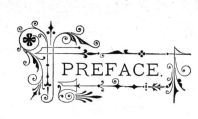
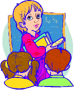

You are about to read a special story problem, one I call a "mathematical fairy story" problem. You may find it a little hard at first, but that's okay. If a story problem is easy for you to do, then it really isn't a "problem" anymore, is it?"
Piet Hein, a Danish mathematician, architect, poet, philosopher, is famous for his little short poems, called Grooks, that contain little bits of wisdom. My favorite one says:
Problems
Worthy of attack,
Prove their worth
By hitting back.
So if my problem below "hits back", then it has proved its worth.
nce upon a time there was a peripatetic philosopher, named Pieros Parios, who lived on his own little private island, called Utopia, just off the coast of Greece. The island was precisely pi kilometers from a prominent peninsula. But he had such a kind spirit and held no prejudice toward anyone, that the people who lived on this island often lovingly called him by the paternalistic appellation of "Papi Pieros". Being the philanthropic man that he was, he established a pair of schools, one private and the other public, for which he served as the principal. He also founded several pristine hospitals, and many other such institutions that provided for the needs of the island's plentiful inhabitants. However, there were no police or prisons on this island, because the population was so content and happiness reigned so completely that no one had any propensity to commit any act of impropriety.
 Our story takes place in the middle school where Ms. Omega O is the math teacher. To bring a little diversion to her particular pedagogical style of instruction, she gives each pupil a new name at the start of each academic period. She first writes the students' names in alphabetical order on a piece of paper. Then the first student on the list is renamed "Alpha A". The second student becomes "Beta B". The third is "Gamma G", and so on, using the letters of the classical Greek alphabet. Everyone thinks it is quite a fun way to practice the Greek alphabet whose letters are so frequently used in higher level math books.
One day Ms. Omega decided to begin her class with a problem related to a topic very dear to her heart: prime numbers. After taking the roll, she turned to the students and said, "I'm going to call on three of you to help me in the preparation of a little problem about prime numbers."
By the look of anticipation on the faces of the pupils as she spoke, she knew that she could predict that a successful learning experience was about to begin. So she continued:
"Alpha, Beta, and Gamma, each of you please take out a small piece of paper and write on it any specific prime of your choice that is less than 100. Then bring your papers to my desk."
Gamma, who always liked to turn in his tests and quizzes prior to anyone else, promptly scribbled his selection and rushed forward to hand in his paper. Alpha and Beta, did not, on the other hand, share the same predilection for haste as Gamma. Being more prim and patient, they took a few more moments before they politely got up from their desks and handed in their papers. (After all, they were girls, who usually are predisposed to behave in a more appropriate manner than boys at this age.)
Upon perusing the three papers, Ms. Omega's face changed to a very pensive mood. Soon, with a smile appearing on her face, she began speaking to the class, saying:
"I have now come to a decision. Here is your problem to solve. I'm sure I don't have to remind any of you that all primes are positive whole numbers. Okay? So I will provide you with two other facts about the numbers that were picked by Alpha, Beta, and Gamma. I'll use their last names, that is, A, B, and G, to state those facts. So watch carefully as I print them on the chalkboard. When you complete your solution, bring your paper to me and put it on my desk. Oh, and one more point. Calculators are not permitted on this problem."
She went to the chalkboard and wrote:
1. A + B is a square number.
2. (A - B) - G = 0.
Then she said, "The question that you need to answer is: What is product of the three primes?"
Immediately, all the pupils began writing avidly with their pencils and ballpoint pens on their papers. But, almost instantly, Gamma, pushing his chair back from his desk, promptly rushed up to Ms. Omega with his paper, obviously full of pride that he was the first to be finished. A few moments later, Alpha, dressed in her cute blue pinafore, rose from her desk and gave her paper to the teacher. Beta did likewise just a few seconds later. The rest of the class, however, continued pondering the matter, with quite puzzled looks on their faces.
Actually, Ms. Omega was not entirely surprised at this, because these three children were the most precocious in the class, in general. They usually scored quite well in math aptitude on standardized tests.
She picked up Gamma's paper first and began reading it. Although his penmanship wasn't always the most legible of the class, she certainly could understand his basic premise. But as she began comparing it with the girls' presentations, her eyes really began sparkling. Their work was easier to read, of course, but she then realized that something truly remarkable had transpired and she was experiencing one of those rare occasions that inspire teachers to call a "teachable moment". (That's when something unexpected happens that merits a second, more in-depth analysis of a situation.)
And as the rest of the students began finishing the problem and turning in their papers, Ms. Omega soon had quite a pile of work on her desk. She then realized she had a lot of grading ahead of her, pouring over all the submissions. She might even have to cancel her appointment with her podiatrist that afternoon. Ah well, that's the life of a dedicated professional pedagogue.
Well, that's basically where our story ends. Now it's your turn to do some serious puzzling and problem solving, by posing some questions for you to ponder:
- Can you find a logical explanation to account for the change of expressions on Ms. Omega's face as she read the solutions submitted by the three children?
- Regarding the naming of the students, we will tell you that the ratio of male to female individuals present in the classroom during this perplexing incident was 1:1. (I guess it's only fair to warn you that the teacher is one of the individuals being counted.) If Papi Pieros, in his role as school principal, were to assign one more new student to this particular section, Ms. Omega would have a little trouble assigning a special name to him/her. But since that hasn't happened yet, tell us the number of boys in this group.
- Also regarding the naming system applied by the teacher, another strange oddity is evident. Some of the students' names become palindromes when written in the style described in the story. How many such cases of palindromic names are there? List them.
- The late Paul Erdös, considered by many to be the most prolific writer of articles about mathematics of this century, perhaps of all time, never married, nor had a family of his own. Yet he dearly loved young children and they loved him. He used one of the Greek letters as his affectionate way to refer to them. What was that letter and why did Erdös undoubtedly choose that particular letter?
- This story was written with a special theme in mind. It will be rather subtle for some readers to deduce, or very mysterious, if you will, for others. And maybe impossible for the remaining people to figure out at all. But there are, we believe, plenty of clues scattered about to provide the necessary information for the most intrepid of problem solvers. Which pigeonhole do you fit in?
- The title of this story even has a familiar ring to it, doesn't it seem to you? Could you draw a connection between the two that makes delicious sense in the culinary arts?
If your wish to send in solutions to some or all of the questions posed above, we encourage it.
Here are my two main addresses: trottermath@gmail.com.
Epilogue
The following day, after the pupils finished passing into the classroom and getting seated, who should enter but none other than Papi Parios himself! He often visited the classes in his schools, (partially to check up on his staff to see if they were promoting his particular philosophy but he also enjoyed the experience of learning something new about math).
Paying no attention to his presence, Alpha and Beta raised their hands, requesting permission to speak. Ms. Omega turned to Alpha first, "Yes, Alpha, what's on your mind today?"
 "Well, Ms. O," she said (using her teacher's proper last name due to the fact that the principal was looking on), "after yesterday's inspiring lesson, Beta and I have been playing around with our own little puzzle, using three primes. May we show it to you on the chalkboard?"
"Well, Ms. O," she said (using her teacher's proper last name due to the fact that the principal was looking on), "after yesterday's inspiring lesson, Beta and I have been playing around with our own little puzzle, using three primes. May we show it to you on the chalkboard?"
"Of course, you may. Come forward, girls."
Alpha took the chalk first, speaking as she wrote the numbers, "We have discovered something peculiar about the first three consecutive primes: 2, 3, and 5. If we multiply the larger pair, 3 x 5, we get 15. Now add 1 to obtain 16. Finally, we divide by the smallest prime, 2. And the answer, 8, is integral!' (Alpha always loved to show off by using fancy, high level terminology.)
"Very nicely explained, Alpha," said Ms. Omega. "But by the very basic principles of odd and even numbers, you can always expect that kind of result. Can you see why?"
"Yes," Alpha replied. "We already thought of that. Here is our formula as proof." Turning once again to the board, she wrote:
odd x odd + 1 odd + 1 even
----------------- = ------------ = -------- = integer (Q.E.D.)
2 2 2
"Now that's impressive, indeed!" beamed Ms. Omega. From the back of the room, Papi Parios began applauding enthusiastically.
"But that's not all we discovered, Ms. O," interjected Beta, with obvious pride in her voice. "Our pattern works for the next set of three consecutive primes where all the numbers are odd." Without saying another word, she took the chalk from her companion and, stepping up to the board, wrote the following:
5 x 7 + 1 35 + 1 36
----------- = -------- = ---- = 12
3 3 3
"Great work, girls. You certainly are to be complimented, don't we think so, everybody?" Principal Parios and the entire class, with one exception, nodded in agreement. Of course, that exception was Gamma, who had already gotten out his laptop computer, and was eagerly pressing his keyboard, entering data of some sort.
"But, alas, our pattern failed to work on the next set of three consecutive primes, namely, 5, 7, and 11," Beta continued, with an obvious look of disappointment on her face. "Anyway, we spied another small bit of number trivia hidden in our two successes. The results of adding 1 to the products always yielded square numbers, 16 and 36."
Sensing another "teachable moment" was at hand, Ms. Omega said to the whole class, "Perhaps if we were to take out our calculators, we could extend our search more efficiently and find another example of the pattern that Alpha and Beta have discovered for us. After all, it's the search that's important here, not the multiplication and division, right?"
Just then, Gamma began jumping up and down beside his desk, shouting excitedly, "Eureka! Eureka!" [That's Greek for "I found it!"] "I've found another case of the pattern!"
Some kids turned to him and asked, "What is it, Gamma? What is it?"
Turning off his laptop and closing the cover, he smugly said, "Find it yourself! I'm keeping it a secret. It's easy. At least, when you're as smart as I am."
Can you find Gamma's solution? It really is easy. But I must let you in on a little secret... He has been continuing his search for a 4th solution for quite some time, with no luck. So it looks like a 4th solution just might be hard after all.
Acknowledgements
WTM would like to recognize two friends who helped make this page extra special. First, thanks go to Panagiotis Stefanides of Athens, Greece, who suggested real Greek names that I could use for the owner of the island. Second, we thank G. L. Honaker, Jr., from Bristol, VA. He created the idea of the three consecutive primes puzzle that was used in the Epilogue section. Without their kind contributions, this fairy story problem would not be as nice as it is (IMHO).